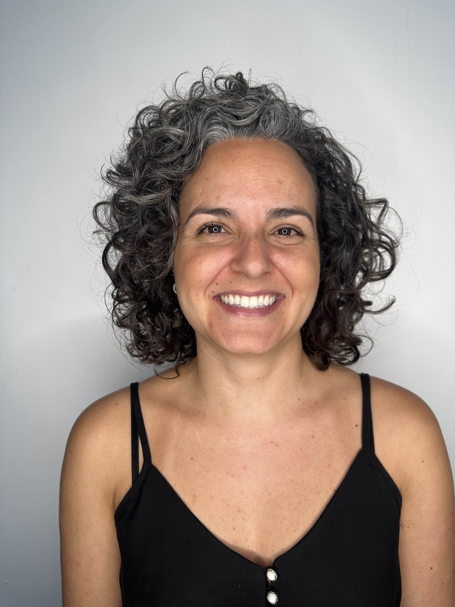

I started with bodies and ended up with interfaces.
I work across entrepreneurship and design, with a user-centred habit of mind and a strong sense of ownership.
I started in the performing arts — years of ballet taught discipline, teamwork and an uncompromising work ethic. A BA in Fashion Design followed, then seven years running my own company, Encena Costumes.
An MA in Costume Design at Berlin University of the Arts, on a DAAD scholarship, took me to the intersection of body, design and technology. A postgraduate certificate in UX Design at Falmouth then named the methods I had been using for years — iteration, feedback loops, structured problem-solving.
Different material, same question: does this fit the person using it? I am looking for a UX role where I can keep asking it, and keep growing.

How I work
Fit before finish
A garment that looks right and moves wrong is a failure. So is a screen. I test early, on people, and let what breaks in the fitting rewrite the design.
Toolkit
User research · Problem framing · Information architecture · Wireframing · UI & design systems · Usability testing
Figma · Photoshop · Adobe Creative Suite
Project management · Client & stakeholder work
Education
Postgraduate Certificate, UX Design — Falmouth University
2025MA Costume Design — Berlin University of the Arts, DAAD scholarship
2024BA Fashion Design — UFMG, Brazil
2022